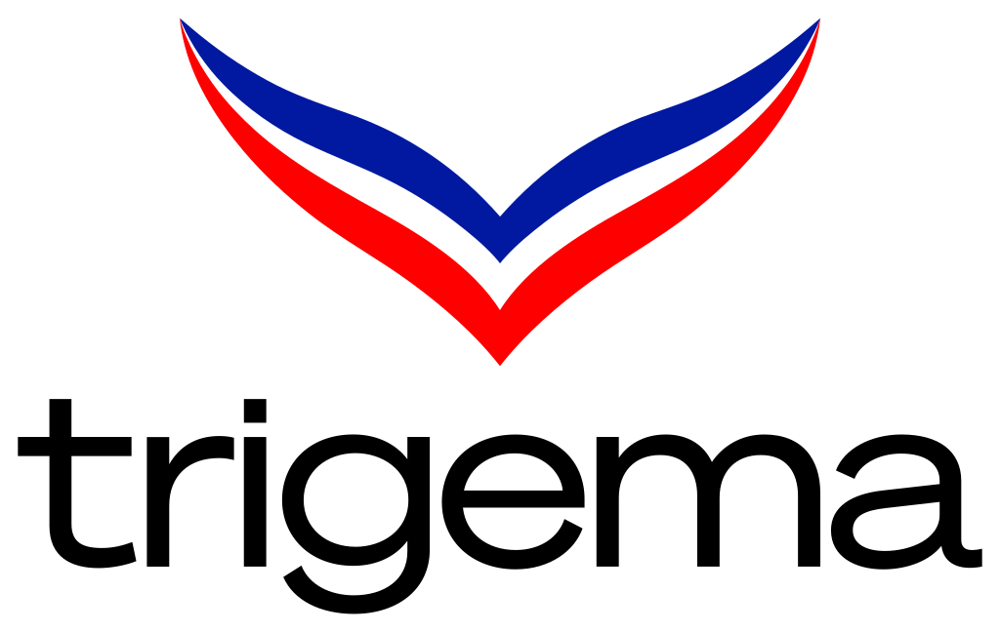

GEO-Gesamt
48/100
Ausbaubar

Die erste GEO-Diagnose zeigt eine seltene Ausgangslage: Die inhaltliche Substanz ist außergewöhnlich stark, die maschinenlesbare Struktur dahinter jedoch noch nicht auf demselben Niveau. Genau darin liegt für TRIGEMA der Hebel.
Dieses Briefing verdichtet die wichtigsten Erkenntnisse aus der Erstdiagnose und übersetzt sie in einen nächsten Schritt, der nicht bei allgemeinen Quick Wins stehen bleibt, sondern produktbezogene Sichtbarkeit messbar macht.
Die Erstdiagnose zeigt keinen Mangel an Substanz, sondern einen deutlichen Übersetzungsbruch. TRIGEMA ist für Menschen sehr stark lesbar. Für generative Systeme ist diese Stärke noch nicht sauber genug strukturiert.
Made in Germany, eigene Produktion, Nachhaltigkeit, Zertifizierungen, Magazin, Podcasts, Betriebsbesichtigung und 44 Filialen sind starke Signale. Sie sind nur noch nicht konsequent so verbunden, dass generative Systeme daraus präzise Antworten bauen können.
TRIGEMA bringt fast alles mit, was generative Systeme positiv bewerten: Herkunft, Historie, Produktionstiefe, Nachhaltigkeit, Vertrauen und klare Differenzierung.
Die Erstdiagnose zeigt bereits, wo TRIGEMA heute als Marke wahrgenommen wird, aber noch zu selten mit konkreten Produkten, Standorten oder Services in die Antwortebene gelangt.
TRIGEMA wird als Marke plausibel, aber oft nur allgemein genannt. Konkrete Produkte, Materialangaben oder direkte Produktverweise fehlen meist.
KI kann TRIGEMA mit einem konkreten Produkt, nachvollziehbarer Herkunft, Zertifikat und passender Quelle verbinden.
Die Marke ist bekannt, aber Standortinformationen sind für KI nicht sauber genug strukturiert. Antworten bleiben oft ungenau und verweisen nur allgemein auf den Store Locator.
KI kann Filialen mit Adresse, Öffnungszeiten und klarer Zuordnung zur Marke wesentlich präziser ausgeben.
Der Shirt-Designer ist ein starkes Differenzierungsmerkmal, wird aber ohne strukturierte Service-Logik nur unzureichend als Antwortsignal genutzt.
TRIGEMA kann mit dem Shirt-Designer, Produktionsbezug und passender Quelle als konkrete Empfehlung erscheinen.
44 Standorte als LocalBusiness beziehungsweise ClothingStore mit Adresse, Öffnungszeiten, Geo-Daten und Verknüpfung zur Marke. Das schließt das größte einzelne Defizit mit vergleichsweise klarer Umsetzungslogik.
Top-Produkte mit Product-Schema, Material, Herkunft, Zertifikaten, Bewertungen und klaren Nutzenargumenten ausstatten. So wird aus der Markenantwort eine belastbare Produktantwort.
Organization-, Person- und Credential-Logik sauber verknüpfen: Historie, Produktion, Zertifikate, Personen, sameAs-Quellen und Services müssen für KI als zusammenhängendes Markensystem lesbar werden.
Regelmäßig messen, bei welchen Kauf- und Entscheidungsfragen TRIGEMA genannt wird, welche Wettbewerber auftauchen und welche Quellen generative Systeme für ihre Antworten heranziehen.
Generative Suche funktioniert nicht wie klassische Trefferlisten. Bei vielen Fragen wird nicht mehr zehnmal geklickt, sondern eine direkte Antwort erwartet. Genau dort entscheidet sich, ob TRIGEMA als konkrete Empfehlung erscheint oder ob Wettbewerber die Antwortlogik besetzen.
Relevant im Nachhaltigkeitsumfeld und bei produktbezogenen Vertrauenssignalen.
Starke Kategorie- und Traditionsnähe bei Basics, Wäsche und deutscher Textilhistorie.
Stark bei Nutzwert, Arbeitskleidung, B2B-Nähe und robusten Produktversprechen.
Made in Germany, eigene Produktion, 44 Filialen, Shirt-Designer, Zertifikate, Historie und starke Marke. Entscheidend ist, diese Signale strukturiert und produktbezogen für KI-Systeme verwertbar zu machen.
Die Erstdiagnose zeigt strukturelle Potenziale. Der nächste Schritt ist die produktbezogene Messung: Bei welchen konkreten KI-Fragen erscheint TRIGEMA, welche Wettbewerber werden genannt und welche Quellen nutzt die KI?
| Entscheidungsfrage | Aktueller Befund | Risiko | Optimierungshebel |
|---|---|---|---|
| „Welches T-Shirt ist 100 Prozent Made in Germany?“ | Kein belastbares Produkt-Signal | TRIGEMA bleibt allgemeine Marke statt konkrete Produktempfehlung | Product-Schema, Herkunft, Material, Produktbelege |
| „Welches OEKO-TEX Poloshirt kommt aus deutscher Produktion?“ | Zertifikats-Signal nicht ausreichend verbunden | Nachhaltigkeitsargument wird nicht sauber produktbezogen ausgespielt | Zertifikate, hasCredential, Product-Daten |
| „Wo finde ich eine TRIGEMA-Filiale in meiner Nähe?“ | Standort-Signal schwach strukturiert | KI verweist nur allgemein oder nutzt andere Quellen | 44x LocalBusiness / ClothingStore |
| „Welche Marke bietet individualisierbare Shirts Made in Germany?“ | Service-Signal fehlt | Der Shirt-Designer wird nicht als Antwortvorteil genutzt | Service-Schema, FAQ, Produkt- und Service-Verknüpfung |
Eine GEO-Erstdiagnose ist nur der Anfang. Entscheidend wird die Frage, bei welchen konkreten Kauf-, Vergleichs-, Nachhaltigkeits-, Standort- und Servicefragen TRIGEMA heute tatsächlich erscheint, welche Wettbewerber genannt werden und welche Quellen KI-Systeme verwenden. Erst daraus entsteht eine belastbare Optimierungs-Roadmap.
Ein kompaktes Einstiegspaket, um aus der Erstdiagnose ein messbares Arbeitsmodell zu machen.
Auswahl von 10 relevanten Produkten oder Produktkategorien. Aufbau einer Prompt-Systematik für Kauf-, Vergleichs-, Nachhaltigkeits-, Standort- und Servicefragen.
Mehrere Abfragen über relevante generative Systeme. Auswertung von Nennung, Quellen, Wettbewerbern, Argumenten und fehlenden Signalen.
Priorisierung der Maßnahmen: strukturierte Daten, Produktseiten, FAQ-Logik, Zertifikate, Filialdaten, Service-Signale und Content-Erweiterungen.
Eine GEO-Scorecard für die wichtigsten TRIGEMA-Produkte plus ein priorisierter Maßnahmenplan für die ersten 30 bis 90 Tage.
Welche Produktgruppen heute schon in KI-Antworten erscheinen und welche nicht.
Welche Marken bei relevanten Prompts genannt werden und warum.
Welche Seiten, Daten und Drittquellen generative Systeme aktuell nutzen.
Welche Optimierungen zuerst Wirkung entfalten können.
Was technisch, redaktionell und strukturell in den ersten Wochen zu tun ist.
Für die Vertiefung der Analyse und die Abstimmung eines möglichen GEO-Startpakets steht Anton Klees als Ansprechpartner zur Verfügung.
Die vollständige Erstdiagnose liegt als Arbeitsgrundlage vor. Diese Seite verdichtet die wichtigsten Erkenntnisse und übersetzt sie in einen konkreten nächsten Schritt.